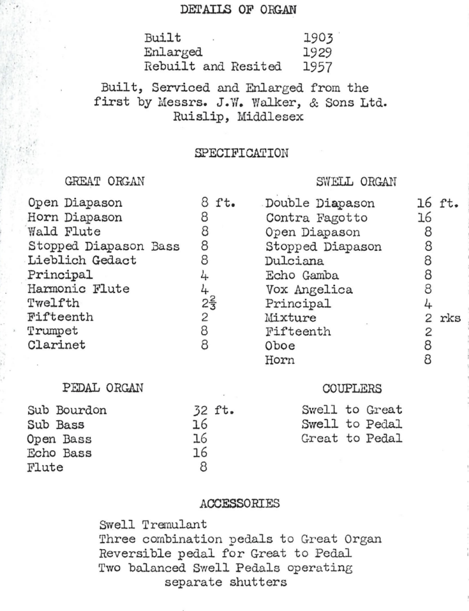

Church Organ
History
An account written by Mr. Andrew Leach in 1981, states that there were no references to an organ in Welton Parish Church prior to its restoration by Sir Gilbert Scott in 1862/3. The first recorded account of an organ occurs in the Church Vestry Book for 1884. In this year, a new organ was installed in the church by Booth and Hepworth, however by 1903 plans were drawn up for significant alterations and repairs by the then organist, Mr. Samuel Wilkinson Pilling.
Appointed 3 years earlier in 1900, Mr. Pilling held the position of honorary organist for 37 years. Described at the time as England’s greatest amateur organist, he became a Vice-President of Trinity College of Music and the first national president of what is now the Incorporated Association of Organists (https://iao.org.uk). Mr. Pilling was an influential figure in the organ design of the period and was held in high regard by organists the world over. Mr. Pilling had in his home at Welton Hall, what is believed to be the largest privately owned organ in the country. Notable players of the time would visit him in order to play the four manual concert organ, shown here.
The current church organ was built by Messrs. J. W. Walker & Sons Ltd of Ruislip, Middlesex. The cost of the work was kindly paid for by two members of the congregation. Modifications completed, the organ was opened on 3rd September, 1903, and Mr. Pilling played at the inaugural recital. Between 1903 and 1908 further enhancements were made to the tonal scheme of the organ. The organ was partially dismantled in 1916 for cleaning, and again in 1929 when it was also enlarged. In 1957, the organ was totally dismantled, rebuilt, resited and re-opened. A recital was given by Eric Bell, F.R.C.O, Organist at St. Mary’s, Beverley.
Specification
The specification below is taken from the 1957 re-opening.
Restoration
After several years use, it became obvious that some restoration work was required. An estimate was accepted from A.J. Carter of Wakefield, who had previously served the organ on behalf of J.W. Walker & Sons, the work to be done in three phases as funds became available. At the time the Carter firm was given complete charge of the organ in lieu of Walkers.
The restoration of the organ took place over 25 years. During that time there were four organists at St.Helen’s: Mr. Andrew Leach; Mr. Ron Jowett; Mr. Gareth Naidoo and Mr. David Lucas. Each contributed to the organ restoration in different ways, as did many members of the choir, congregation and community. We are grateful to all of them for their contributions.
The three phases of the organ restoration were as follows:
Phase 1 – Early 1993
The pedal organ was electrified, the pipe work was completely dismantled, thoroughly cleaned and regulated. After a lapse of several years, the 32ff sub-bourdon pipes were again sounding, greatly enhancing the sound of organ generally. This work cost approximately £5,800.
Phase 2 – Late 1994/1995
he manual pipework was dismantled. All pipes and upper boards were thoroughly cleaned, the pipes regulated and the five reed stops revoked. At the same time there were some minor modifications made to both the Great and Swell organs. This work cost approximately £7,900.
The specification below is taken from the 1995 documentation.
Phase 3 – January to April 2003
January to April 2003 saw the 3rd and final phase of the restoration of the organ undertaken. On Saturday 22 November 2003 at 7.30pm (St. Cecilia Day) there was a service in celebration of music at St. Helen’s. The service was lead by Revd. Elaine Bielby, a sermon was given by Most Revd. and Right Hon. Dr David Hope, the then Archbishop of York. The organ was played by Mr. Julian Savory. The evening service also marked the centenary of the original installation of the organ at St. Helen’s and the completion of the restoration of the organ.
Organ Recordings - July 2023
The following additional recordings were made on the same day:
- Bridal Chorus – Richard Wager (1813-1883)
- Wedding March – Felix Mendelssohn (1809-1847)
- Arrival of the Queen of Sheba – G. F. Handel (1685-1759)
- The Prince of Denmark’s March – Jeremiah Clarke (1674-1707)
Organists
Records of the 20th century organists are currently incomplete. If you can help with any details, please let us know!
1999 to date – Mr. Gareth K. Naidoo, BMus (Hons), Dip. ABRSM [main organist]
Gareth studied music at Leeds University, majoring in piano performance. He joined St. Helen’s Church Choir at the age of 8, working his way up the ranks to Head Chorister and gaining the RSCM top medal, the St. Nicholas award.
Gareth started learning the organ at the age of 13, taking lessons from the former Organist and Choir Director of Beverley Minster, Alan Spedding and then later from the former Assistant Organist of Beverley Minster, Colin Wright. Gareth has been organist at St. Helen’s, Welton since 1999 when he took over the reigns at the age of 16 from Ron Jowett.
2001 to 2003 – Mr. David Lucas
David was organist between September 2001 and September 2003 (whilst Gareth was at university). David then left for university himself in September 2003 and until recent years (when he moved to Munich) has still played on occasions when returning to visit family in the area.
2000s to date – Mr. Michael Waltham, BMus (Hons), [first Sundays monthly]
Michael studied music at Huddersfield University, majoring in violin and voice, graduating in 2002. Michael has Grade 8 violin, Grade 6 piano and Grade 6 church organ. Michael has sung in various church and local choirs and societies including Hessle Theatre Company, Beverley Chamber Choir, Hull Savoyards and St. Helen’s Church Choir.
Michael is a also Musical Director of Priory Park Singers, a Choir that formed in October 2004 and are now based at Tower Hill Methodist Church, Hessle.
2000s to date – Mrs. Corinne Cook, B.A. (Hons), P.G.C.E. [reserve organist]
Dates unknown. Mr. Gwilym Beechey, FRCO, FTCL, LRAM, ARCM (d. 2015)
Born in London in 1938, Mr. Beechey was a musical scholar, organist, pianist, harpsichordist, lecturer, editor, and composer. He was educated at Magadalene College Cambridge, where he was a major scholar and research student. He graduated MA, Mus B, Ph D, and also gained the diplomas of FRCO, FTCL, LRAM and ARCM.
After a time as a schoolmaster Mr. Beechey became a university lecturer, firstly in Glasgow and latterly in Hull. He was prolific composer of organ and other church music. His publications include Thomas Linley (Junior) Shakespeare Ode (Musica Britannica XXX) and many editions of 17th and 18th century works, chiefly by British composers. Mr. Beechey died in December 2015.
1983 to 1998 – Mr. Ron P. Jowett, Honorary Organist, previously Organist at Hull City Hall (d. 2002)
Mr. Jowett was 13 when he obtained his first position as a church organist. He continued to play into his nineties, and celebrated his 90th with a cake at St. Helen’s!
Mr. Jowett held several organist positions throughout his life. He was Assistant organist at Pocklington Congregational Church (1919-1923), Organist at Withernsea Wesleyan Church (1923-27), Organist at Ashdale Methodist Church, Helmsley (1927-35), Organist at Sowerby Methodist Church, Thirsk (from 1936), Organist at Fish Street Congregational Church, Hull and Honorary Organist at St Helen’s (1983-1998).
before 1977 to 1982 – Mr. Andrew Leach, A.R.M.C.M, A.F.C.M, F.R.S.A.
Mr. Andrew Leach
Andrew Leach studied at the Royal Manchester College of Music. He was also formerly assistant organist at Beverley Minster and Master of the Music at Howden Minster.
Since 1982, Mr. Leach has been the organist at All Saints Church, Hessle.
Dates unknown – Dr. Wyatt
No information is currently available about Dr. Wyatt.
1900 to 1937 – Mr. Samuel Wilkinson Pilling (d. 1939)
Mr. Samuel Pilling, November 1931
Mr. Pilling was born in 1856 in Bolton. He received his early musical training at Manchester Cathedral. At some point in late 1896 or early 1897, Mr. Pilling was elected as President of the Wakefield & District Organists’ Association. In 1901, he moved from Mirfield to Welton. In 1903, Mr. Pilling drew up the specification for the new Walker organ for St Helen’s. In recognition of Pilling’s significant financial contribution towards the cost of the organ’s erection, the PCC made him the honorary organist of the church. In 1913, Mr. Pilling was elected as the first President of the National Union of Organists’ Associations, which later became the IAO.
Mr. Pilling served St. Helen’s for a total of 37 years. He died in March 1939, aged 82. His funeral was held at St. Helen’s.
St. Helen’s continues to welcome guest organists for some services, weddings and other events. These include Julian Savory (Organist & Choirmaster, St. Mary’s Church, Cottingham), Ian Cockerline, Lester Bartlett (Music Coordinator and Organist, All Saints Church, North Ferriby, Terry Wallis (Assistant Organist, All Saints Church, North Ferriby) and the now late Richard Taylor.
Sources
- Welton As I Remember It – David H. Parker, 3rd Edition, July 2001
- The Organs of Welton Parish Church, Andrew Leach, April 1981
- The PipeLine, Journal of the York and District Organists’ Association, June 2015 Edition, online PDF.
- Welton Parish Church Organ Recital for Re-Opening of Organ, 17 April 1957
- St. Helen’s Parish Church, The Organ, compiled by Ron Jowett, June 1995
- Wikitree.com entry about Mr. Ron P. Jowett, accessed February 2023
- BachCantatas.com entry about Mr. Gwilym Beechey, accessed February 2023
- Recollections by Helen Duffus & Gareth Naidoo, February 2023